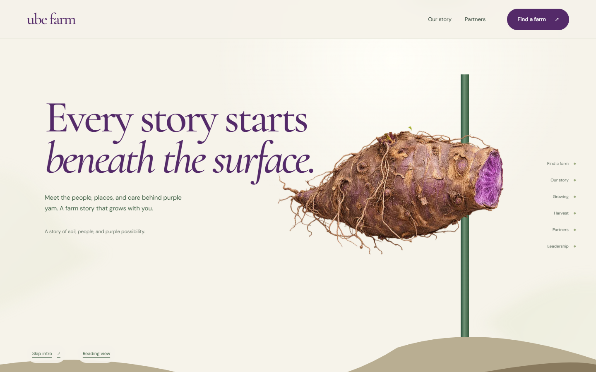
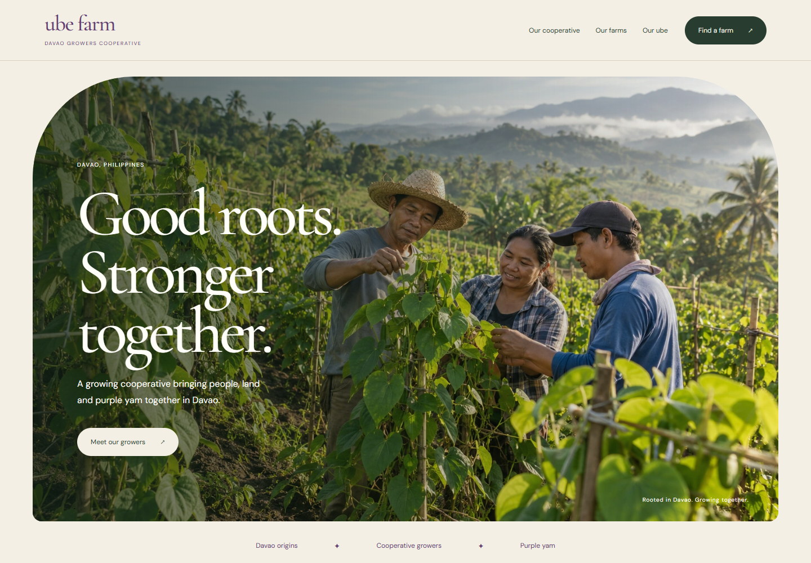
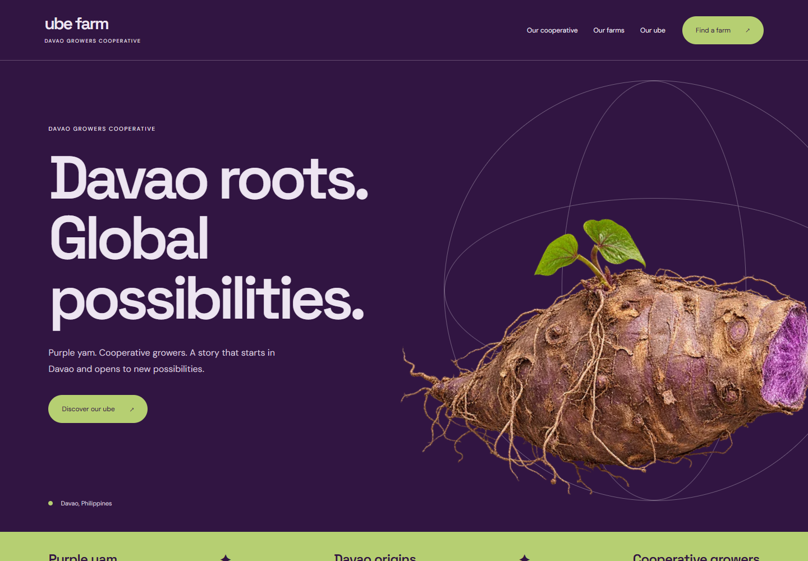

01 From Root to StoryPlant an ube root, follow its vine into the sky, then discover the cooperative and its farms on connected leaves.Existing working prototypeDesktop imageMobile imageConcept PDF
02 Grown Together in DavaoA warm editorial website that introduces the cooperative through its people, Davao setting and shared growing story.New design conceptDesktop imageMobile imageConcept PDFBrowse concept preview
03 Purple to the WorldA confident purple identity that brings the crop forward, then connects visitors to the people and farm information behind it.New design conceptDesktop imageMobile imageConcept PDFBrowse concept preview